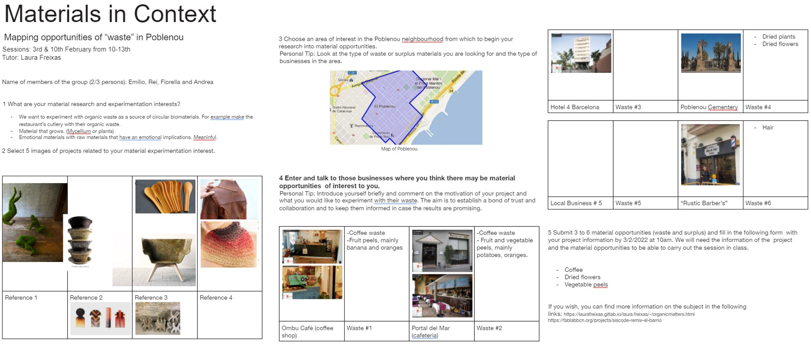
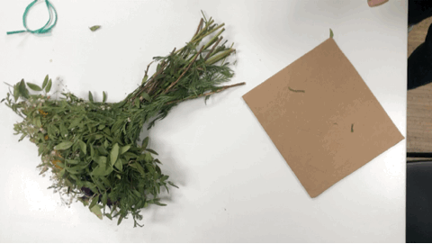
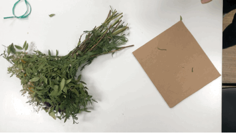
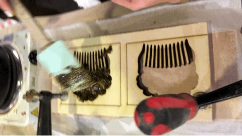
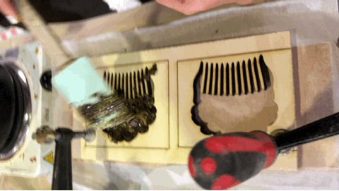
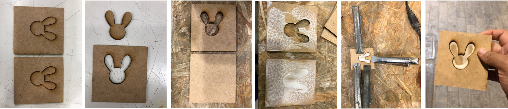
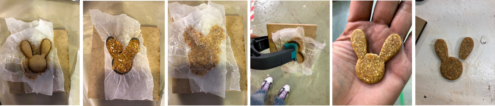
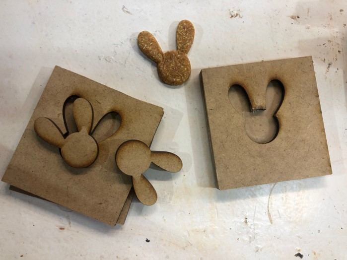

BIOMATERIALS with LAURA FREIXAS
In this second part of the experimentation with biomaterials, we explore the waste in context and how can we make part of the cycles of the food as a waste. What opportunities we have as a community to use them, and also, where do we have to start looking for them.
In this seminar, I discovered that people involved in the matter of biomaterials are not unifying forces to manage the waste; what I mean is that, people just collect it to develop whatever they need to and thats it. And the question is, What´s next?, or what happened after we finish what we are doing?
FINDING THE CONTEXT
PLENTY OF OPTIONS, AND APPARENTLY OWNERS ARE WILLING TO DONATE WASTE
In this
THE CHOSEN ONE
BOUQUETS°°°°° FLOWERS FROM CEMENTERY
As a group by initiative of Andrea we chose the flowers of the cementery as a great opportunity to develop a design with meaning. We start with pick them up from the waste container in the cementery, we ask for permission and it was easy, the next time wasn´t neccesary to do it.
The idea is to develop a jewelry accessory for the heardo, that is used in the funerals by the closed family as a spanish tradition.
We thought at the begining in fabricate a "big" mould and then sculp it in the LASER CUT MACHINE, but because of the smokes it wasn´t accepted. So, what we had realized is that we require a special-design-mould for the jewelryand the only resourses that we had in that time was a 2D one.
At the end, it didn´t work due to the shape of the mould, and also we tried to used release agent instead of the paper.
 



 



PLAYING WITH SHAPES
A RING THAT LOOKS LIKE .......BUT SMELLS WEIRD
As a personal experimentation I tried to...............
  A RING THAT SMELLS LIKE ::: PART 2